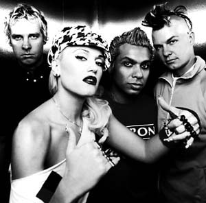
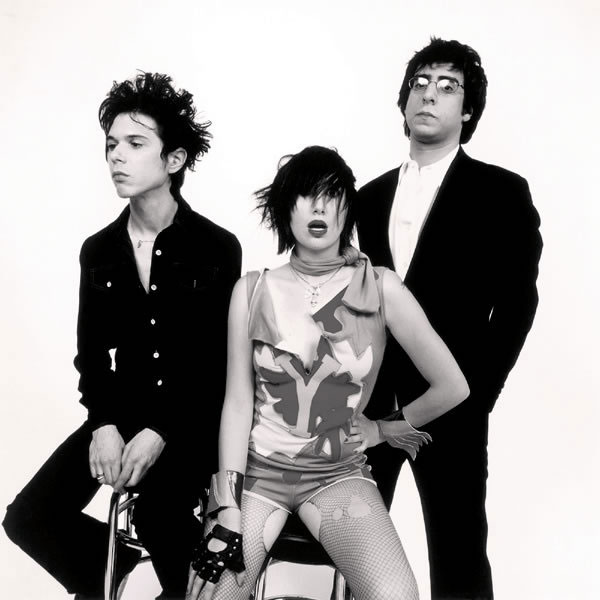
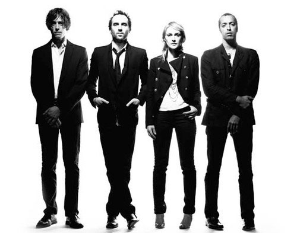
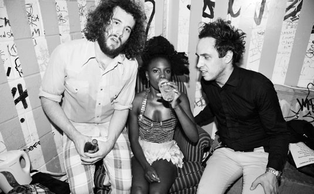
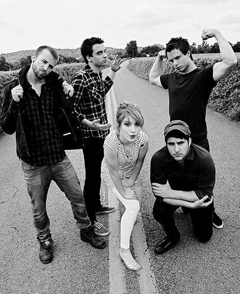

DUCHESS OF THE DUDES
By: Ciera Mckissick
Duchess: a woman who holds the rank of duke in her own right
amfm Duchess: Gwen Stefani, Karen O, Emily Haines, Shingai Shoniwa, and Hayley Williams.These chicks definitely know how to rock. Surrounded by the men in their bands, these women are running the show with talent, style and grace.
GWEN STEFANI
Gwen Renée Stefani Rossdale
Front woman of No Doubt (vocals and guitar)
Born in 1969, which would make her fabulously 40
Anaheim, California native
Why She Rocks: First of all, she's got tons of titles under her belt- singer, once solo, and with No Doubt for nearly two decades, designer of her L.A.M.B line, SAG award nominated actress for her role in The Aviator, and just being down right cool. Gwen Stefani captivated us all with No Doubt's song "I'm Just a Girl" from their Tragic Kingdom album, which made the band a household name. People wouldn’t see this much girl power until the Spice Girls. When they play that song on tour, Stefani gets down and gives the audience 10 push-ups, whilst singing--that's impressive in itself.
What Stefani's got going for her is that she's one of the guys, yet so obviously a knockout in all departments. Her signature vibrato ska voice just adds to the mix. She's definitely a fashion icon--she has this edge to her. And let's not forget about the abs! Not only is she 40, but she has had two children. Stefani is living life in a boy’s world, with husband, Gavin Rossdale, and sons, Kingston and Zuma. With her platinum blond life and ability to actually pull off bright red lipstick, she's a modern day Marilyn Monroe.
KAREN O
Karen Lee Orzolek
Front woman of the Yeah Yeah Yeahs (vocals)
Born in 1978, which would make her 31
South Korea native, New Jersey raised
Why She Rocks: Karen O is the epitome of that rock star aura. Coming onto the scene with the Yeah Yeah Yeahs Fever to Tell, O established herself as an artsy punk princess, and now she has sort of evolved into this indie queen. On that album, she is able to go from fast tempo punk influenced songs like "Date with the Night" to the indie classic "Maps." She's always got this funky thing going on with her hair whether its long or short.
She really has a stage presence when she performs. She's so into the crowd and the performance and she has a certain stance, and does this finger shaking thing. She's been known for the attention grabbing clothes she wears on stage, and in videos. (That leather studded jacket from the "Zero" video was to die for.) At this year's Lollapalooza, she walked onto the stage wearing multiple feather headdresses, and has worn everything from kimonos, to plastic dresses. A lot of the awesome clothes she wears are designed by her close friend Christian Joy. O also has some side projects she's done, including another band called Native Korean Rock, and composing all of the songs on the Where the Wild Things Are soundtrack. Karen O is definitely the face of the Yeah Yeah Yeahs.
EMILY HAINES
Emily Haines' name is actually Emily Haines
Front woman of Metric (vocals, piano, guitar)
Born in 1974, which would make her 35
New Delhi, India native, Toronto, Canada raised
Why She Rocks: I've bowed down before this rock goddess before, and it wasn't demeaning; it was uplifting. Emily Haines of Metric is amazing on stage; it's like she goes into a musical trance. She plays the guitar, the piano and rocks a synth like no other. You see her rocking back and forth intensely. Her hair completely covering her face, while she's worshipping the musical gods, only you're worshipping her.
There are many musical sides to Haines, she's in the collaborative group Broken Social Scene, and has released two solo albums that show a softer side of the singer and showcases her piano skills. Haines is not only the front woman to the band, but also to lead guitarist James Shaw. They formed a band, later becoming what we all know as Metric. She's got legs for days, which she always showcases with shorts and dresses and paired with boots or heels. You can't help but be drawn to her, be it visually or sonically, she pulls you in her trance and you'll be gone for days.
SHINGAI SHONIWA
Shingai Elizabeth Maria Shoniwa
Front woman of the Noisettes (vocals, bass, guitar, cello)
Born in 1980, which would make her 29
South London, UK
Why She Rocks: This chick is awesome! She's got awesome hair, awesome style, and mad skills. Not only can she shred a guitar, but she can rock out on the bass and the cello. She adds so much versatility to the music of the Noisettes, which is a indie-rocker spin on old 1930’s jazz and blues. "Don't Upset the Rhythm" from their album Wild Young Hearts is a perfect example of what the 1930's meshed with indie tunes would sound like.
Shoniwa's voice is fresh, and the Noisettes are really adding something to the music scene out there that's different. She has been known to throw a good party-- the Noisettes are known around the UK as one of the craziest acts in London. She's been known to perform barefoot and wear tribal face paint at times. Her eclectic style is mix of a bit of everything from rocker to tribal. Her killer coif also adds to her cool persona. She often dons feathers in her hair, has interesting asymmetry, and can really pull off one big earring. Shoniwa definitely takes the lead of this pack. She's is an African queen, and it's suitable--her mother is from Zimbabwe.
HAYLEY WILLIAMS
Hayley Nichole Williams
Front woman of Paramore
Born in 1988, which would make her 20
Meridian, Mississippi native, Franklin, Tennessee raised
Why She Rocks: Hayley Williams is the fire that keeps Paramore going, with her red hair, exceptional vocal skills and Southern spunk. She's the youngest duchess on the list, and she's already running the show. The dudes of the band, who had already been formed had been a little apprehensive about bringing some estrogen into the scene, but it was the best decision they ever made.
Williams and Paramore have since done three albums, and their breakout album Riot! was a huge success. Williams proved that she's no chick to mess with when they came out with "Misery Business." She can rock and prank around with the boys, and hold her own quite well. Her voice is so versatile that she's able to go from hard to soft, and always keeps you guessing. It has a really lovely acoustic quality to it, and there's something about the way she enunciates her words that keep you hanging on her every word. At the ripe age of 20, Williams has even more evolving to do!